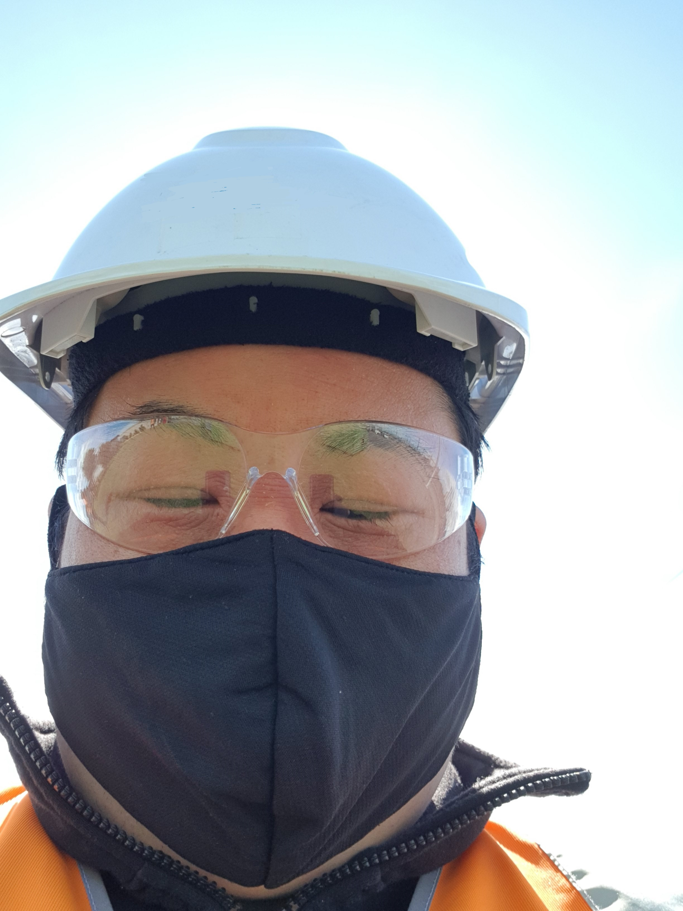
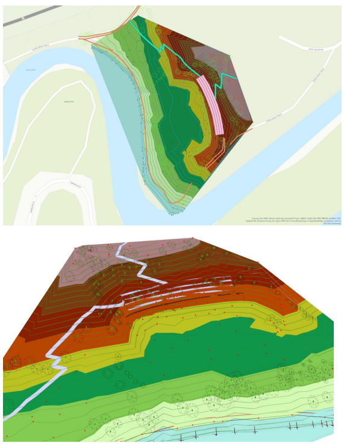
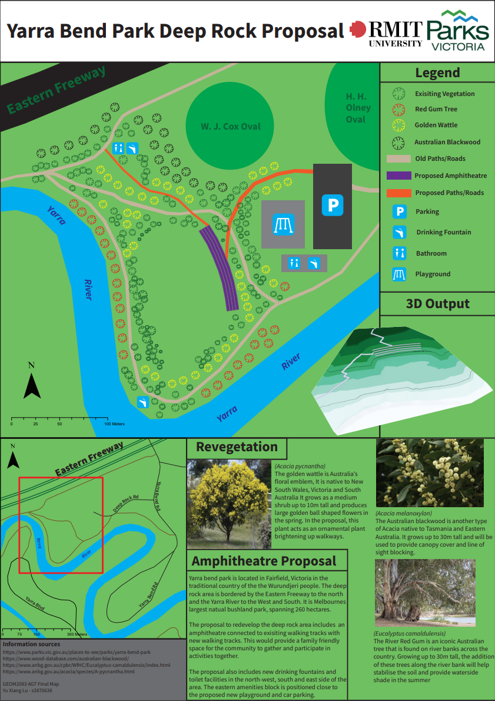
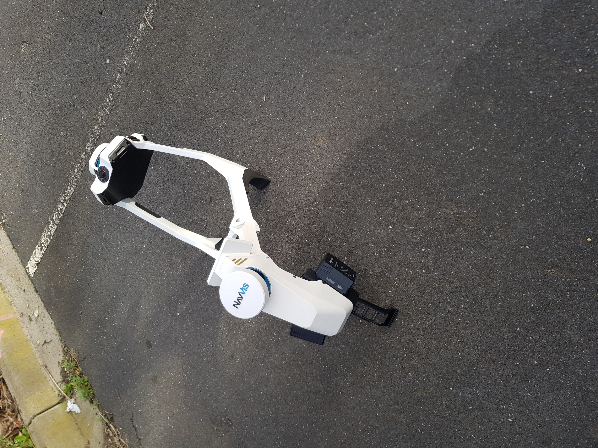
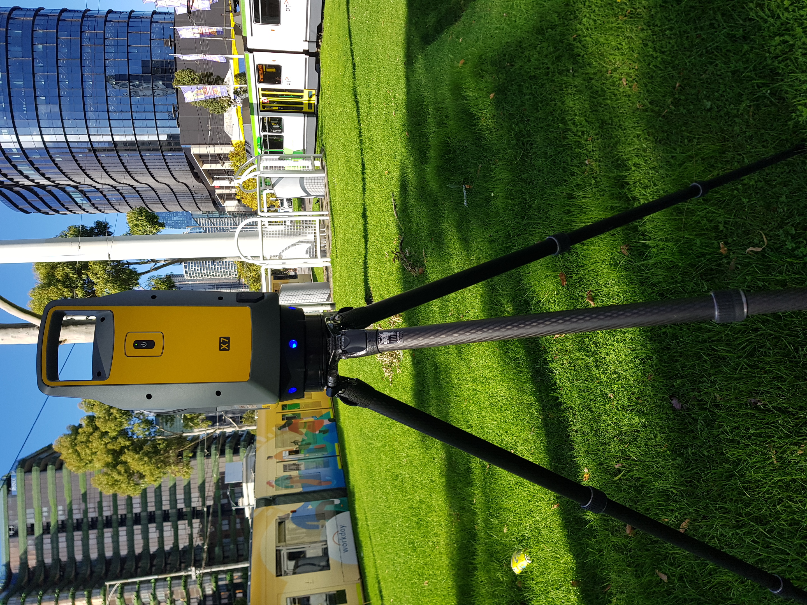

Geoportfolio
Andrew Lu
About
This website is the geoportfolio of Andrew Lu which was made for the subject Professional Practice (GEOM2116). The website entails
information that is academically and profesionally related to the field of geospatial science
I am in my fourth and final year of the Bachelor of Science (Geospatial Science) (Honours) course. My current aspiration is to become a licenced surveyor,
my surveying related interests are mostly working with new instruments in disciplines such as laser scanning and remote sensing. I have been involved in many
major projects in Victoria's surveying and construction industry such as the rail crossing removal project and various water authority jobs.
In my personal time i enjoy driving and cooking, i love exploring new restaurants to get inspiration from.

Academic Portfolio Overview
Cadastral Surveying
Cadastral Surveying is the discipline of land surveying that defines or re-establishes land parcel and title boundaries. The content of cadastral related
subjects teach the rules and regulations that govern actions when performing a cadastral survey. Significant assignments usually involved the drawing of
plans of subdivision and writing licenced surveyors reports. Generally, the output for these types of assignments were hand drawn or digitsed Abstracts of Field Records documents.
Note: If map display is too small, right-click the image and 'Open in new tab' to allow zooming of the map.
Output from AutoCAD for Assignment 2b in GEOM2101, a digitsed Abstract of Field Records

Applied Geospatial Techniques (AGT)
Applied Geospatial Techniques (AGT) is a subject that combines and utilises knowledge and working processes from three different disciplines of geospatial science
- Surveying
- Geographical Information Systems (GIS)
- Cartography
I was enrolled into this subject in 2021, the major assignment was about the proposal of creating an amphitheatre at Deep Rock Oval located at Yarra Bend Park.
The main deliverables of the subject consisted of producing:
- Topographic survey map of Deep Rock Oval
- 3D generated scene of the proposed amphitheatre
- Amphitheatre and Pathway plan of the proposed site
- Final map of the amphitheatre proposal
The topographic survey map was created using surveying data obtained on the field using a total station at Deep Rock Oval, Yarra Bend Park.
The topographic map was made using LISCAD.SEE and LISCAD.CAD. The 3D generated scene was created using the ArcGIS suite program ArcScene while the raw data was
modified in ArcMap. The proposed pathway was created using ArcMap by using the GIS program to generate the pathway based on slope angle and the amphitheatre
based on z-values. The final map used Adobe Illustrator to create the map along with ArcMap for exporting the 2D amphitheathre image and ArcScene for
exporting the image of the 3D scene.
Note: If map display is too small, right-click the image and 'Open in new tab' to allow zooming of the map.
Topographic survey map (Surveying component)

3D Amphitheatre and pathway plan (GIS component)

Final map of proposal(Cartography component)

Industry Experience
This page will briefly cover all my work experience (as of September 2022) within the geospatial science industry. The two main companies that I have worked at
were AAM Group and Tetra Tech. This page will outline my experience gained and skills I have learned from working at AAM Group and Tetra Tech along with an
overview of my current geospatial skillset.
Taylors Development Strategists PTY LTD

Survey Assistant - Infrastructure Survey
October 2019 - Current Day
I interviewed for and was offered a position at Taylors a little prior to beginning studying at RMIT, with the purpose of working in industry as i learned to provide a
well rounded professional delvelopment experience as a surveyor. Taylors is one of the larger surveying companies in Victoria and is multidisciplinary, with departments
working on Cadastral, Infrastructure, Urban Development, GIS, and Construction projects from across the state. At Taylors, i have been exposed to many types of surveying
including: Bathymetric survey using a remote controlled boat, Feature surveys, Drone surveys, Cadastral surveying, and Laser scanning survey.
As part of the infrastructure team, a majority of projects ive been a part of are related to infrastructure, such as Railways, Water authorities, Schools, Universities, and
Shopping centres. I have been enjoying the workflow of Laser scanning survey as it allows me to work with cutting edge surveying technology. It also makes me think of the people
who will be using the data after i have captured it. Positioning of scanners and other afterthoughts need to be focused on to make the processor's job as easy as possible to
ensure a smooth delivery of the project to the client.
Navvis VLX Mobile Mapping System

Trimble X7 Laser Scanner

Skills and Proficiencies
 |
GIS |
 |
Cartographic Principles |
 |
Remote Sensing |
 |
Adobe Illustrator |
 |
Python Programming |
 |
Photogrammetry and Drone Mapping |
 |
Surveying and Laser Scanning |
Credits and Attributions
The following programming languages and software were used to create the website
- HTML
- CSS
- JavaScript
- Visual Studio Basic
The deliverables contains content from the following subjects:
- Cadastral Surveying Practice (GEOM2101)
- Applied Geospatial Techniques (GEOM2083)
As per the policy of using the Flaticons with a free account, the attributions and crediting of the creators of the icons are as below:
Attributions of icons used: